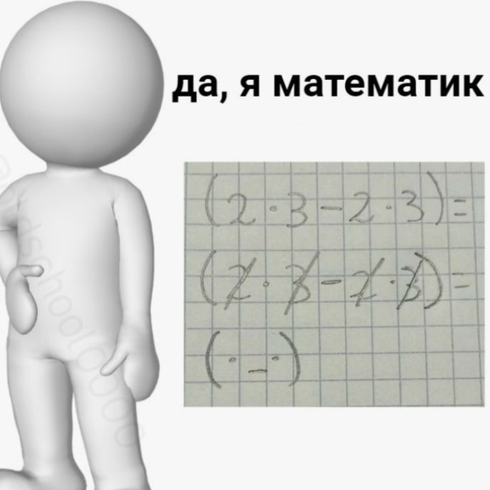

Матрицы
Определение, виды, операции, определители и реализация на JavaScript
Нажмите пробел или стрелки для навигации
1. Определение матрицы
Что такое матрица?
Матрица — прямоугольная таблица чисел, расположенных в m строках и n столбцах.
Обозначение: \( A_{m \times n} = (a_{ij}) \), где \( i \) — номер строки, \( j \) — номер столбца.
Пример: \( \begin{pmatrix} 2 & 5 \\ -1 & 0 \\ 3 & 4 \end{pmatrix} \) — матрица 3×2.
2. Виды матриц
Квадратная матрица
Число строк равно числу столбцов (\( m = n \)).
Пример (порядок 3):
\( \begin{pmatrix} 1 & 2 & 3 \\ 4 & 5 & 6 \\ 7 & 8 & 9 \end{pmatrix} \)
Диагональная матрица
Квадратная матрица, у которой все элементы вне главной диагонали равны нулю.
\( \begin{pmatrix} 3 & 0 & 0 \\ 0 & -1 & 0 \\ 0 & 0 & 2 \end{pmatrix} \)
Единичная матрица
Диагональная матрица, у которой все элементы на главной диагонали равны 1.
\( I_3 = \begin{pmatrix} 1 & 0 & 0 \\ 0 & 1 & 0 \\ 0 & 0 & 1 \end{pmatrix} \)
Нулевая матрица
Все элементы равны нулю.
\( \begin{pmatrix} 0 & 0 \\ 0 & 0 \end{pmatrix} \)
Треугольная матрица
Верхняя треугольная: ненулевые элементы только на главной диагонали и выше.
\( \begin{pmatrix} 2 & 7 & 1 \\ 0 & 5 & 3 \\ 0 & 0 & 4 \end{pmatrix} \)
Нижняя треугольная: элементы выше диагонали равны нулю.
Транспонированная матрица
Матрица \( A^T \), полученная заменой строк столбцами.
Если \( A = \begin{pmatrix} 1 & 2 \\ 3 & 4 \\ 5 & 6 \end{pmatrix} \), то \( A^T = \begin{pmatrix} 1 & 3 & 5 \\ 2 & 4 & 6 \end{pmatrix} \).
Симметричная матрица
Квадратная матрица, совпадающая со своей транспонированной: \( A = A^T \).
\( \begin{pmatrix} 2 & 1 & 3 \\ 1 & 0 & -2 \\ 3 & -2 & 4 \end{pmatrix} \)
3. Сумма матриц
Алгоритм сложения
- Матрицы должны быть одного размера \( m \times n \).
- Результирующая матрица \( C = A + B \) определяется поэлементно:
\( c_{ij} = a_{ij} + b_{ij} \) для всех \( i, j \).
Пример сложения
\( A = \begin{pmatrix} 1 & 3 \\ 2 & 0 \end{pmatrix}, \ B = \begin{pmatrix} 2 & -1 \\ 0 & 4 \end{pmatrix} \)
\( A + B = \begin{pmatrix} 1+2 & 3+(-1) \\ 2+0 & 0+4 \end{pmatrix} = \begin{pmatrix} 3 & 2 \\ 2 & 4 \end{pmatrix} \)
4. Умножение матриц
Алгоритм умножения
- Матрицы \( A_{m \times n} \) и \( B_{n \times p} \) должны быть совместимы: число столбцов A равно числу строк B.
- Элемент \( c_{ij} = \sum_{k=1}^{n} a_{ik} \, b_{kj} \).
- Результат — матрица размера \( m \times p \).
Пример умножения
\( A = \begin{pmatrix} 1 & 2 \\ 3 & 4 \end{pmatrix}, \ B = \begin{pmatrix} 2 & 0 \\ 1 & 2 \end{pmatrix} \)
\( A \times B = \begin{pmatrix} 1\cdot2+2\cdot1 & 1\cdot0+2\cdot2 \\ 3\cdot2+4\cdot1 & 3\cdot0+4\cdot2 \end{pmatrix} = \begin{pmatrix} 4 & 4 \\ 10 & 8 \end{pmatrix} \)
5. Определитель матрицы
Определение
Определитель — число, характеризующее квадратную матрицу. Обозначается \( \det(A) \) или \( |A| \).
Для матрицы 2×2: \( \det\begin{pmatrix} a & b \\ c & d \end{pmatrix} = ad - bc \).
Определитель 2‑го порядка
\( \det(A) = a_{11}a_{22} - a_{12}a_{21} \)
Пример: \( \begin{vmatrix} 3 & 4 \\ 2 & 5 \end{vmatrix} = 3\cdot5 - 4\cdot2 = 7 \)
Определитель 3‑го порядка
Правило Саррюса (или разложение по первой строке).
\( \begin{vmatrix} a_{11} & a_{12} & a_{13} \\ a_{21} & a_{22} & a_{23} \\ a_{31} & a_{32} & a_{33} \end{vmatrix} = a_{11}a_{22}a_{33} + a_{12}a_{23}a_{31} + a_{13}a_{21}a_{32} - a_{13}a_{22}a_{31} - a_{11}a_{23}a_{32} - a_{12}a_{21}a_{33} \)
Определитель 4‑го порядка
Вычисляется разложением по строке (столбцу) через миноры:
\( \det(A) = \sum_{j=1}^{n} (-1)^{i+j} a_{ij} M_{ij} \), где \( M_{ij} \) — определитель матрицы, полученной удалением i-й строки и j-го столбца.
На практике сводится к рекурсивному вычислению определителей 3‑го порядка.
6. Программы на JavaScript: сложение и умножение
Функция сложения матриц
function addMatrices(A, B) {
if (A.length !== B.length || A[0].length !== B[0].length) {
throw new Error('Матрицы разных размеров');
}
return A.map((row, i) =>
row.map((val, j) => val + B[i][j])
);
}
Функция умножения матриц
7. Программы на JavaScript: определитель
Определитель 2×2
function det2(m) {
return m[0][0] * m[1][1] - m[0][1] * m[1][0];
}
Определитель 3×3
function det3(m) {
return (
m[0][0] * (m[1][1] * m[2][2] - m[1][2] * m[2][1]) -
m[0][1] * (m[1][0] * m[2][2] - m[1][2] * m[2][0]) +
m[0][2] * (m[1][0] * m[2][1] - m[1][1] * m[2][0])
);
}
Определитель 4×4 (рекурсия)
function det4(matrix) {
const n = matrix.length;
if (n === 1) return matrix[0][0];
if (n === 2) return det2(matrix);
let det = 0;
for (let j = 0; j < n; j++) {
// минор без первой строки и j-го столбца
const minor = matrix.slice(1).map(row =>
row.filter((_, idx) => idx !== j)
);
det += (j % 2 === 0 ? 1 : -1) * matrix[0][j] * det4(minor);
}
return det;
}
Работает для любого порядка (в т.ч. 4×4).
8. Исходный код программ
Код операций с матрицами (фрагмент)
Функции addMatrices и multiplyMatrices показаны ранее.
Полный код доступен в репозитории проекта.
Код определителя (фрагмент)
Функции det2, det3, det4 реализованы без внешних библиотек.
9. Весёлые картинки по теме
Мем 1: «Матрица уже не та»

Мем 2: «Когда перемножил матрицы вручную»

Мем 3: «Определитель равен нулю»

Спасибо за внимание!
Матрицы — это просто!